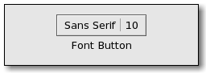

| GTK+ Reference Manual |
|---|
GtkFontButtonGtkFontButton — A button to launch a font selection dialog |  |
#include <gtk/gtk.h>
GtkFontButton;
GtkWidget* gtk_font_button_new (void);
GtkWidget* gtk_font_button_new_with_font (const gchar *fontname);
gboolean gtk_font_button_set_font_name (GtkFontButton *font_button,
const gchar *fontname);
const gchar* gtk_font_button_get_font_name (GtkFontButton *font_button);
void gtk_font_button_set_show_style (GtkFontButton *font_button,
gboolean show_style);
gboolean gtk_font_button_get_show_style (GtkFontButton *font_button);
void gtk_font_button_set_show_size (GtkFontButton *font_button,
gboolean show_size);
gboolean gtk_font_button_get_show_size (GtkFontButton *font_button);
void gtk_font_button_set_use_font (GtkFontButton *font_button,
gboolean use_font);
gboolean gtk_font_button_get_use_font (GtkFontButton *font_button);
void gtk_font_button_set_use_size (GtkFontButton *font_button,
gboolean use_size);
gboolean gtk_font_button_get_use_size (GtkFontButton *font_button);
void gtk_font_button_set_title (GtkFontButton *font_button,
const gchar *title);
const gchar* gtk_font_button_get_title (GtkFontButton *font_button);
GObject +----GtkObject +----GtkWidget +----GtkContainer +----GtkBin +----GtkButton +----GtkFontButton
"font-name" gchararray : Read / Write "show-size" gboolean : Read / Write "show-style" gboolean : Read / Write "title" gchararray : Read / Write "use-font" gboolean : Read / Write "use-size" gboolean : Read / Write
The GtkFontButton is a button which displays the currently selected font an allows to open a font selection dialog to change the font. It is suitable widget for selecting a font in a preference dialog.
GtkWidget* gtk_font_button_new (void);
Creates a new font picker widget.
| Returns : | a new font picker widget. |
Since 2.4
GtkWidget* gtk_font_button_new_with_font (const gchar *fontname);
Creates a new font picker widget.
| fontname : | Name of font to display in font selection dialog |
| Returns : | a new font picker widget. |
Since 2.4
gboolean gtk_font_button_set_font_name (GtkFontButton *font_button, const gchar *fontname);
Sets or updates the currently-displayed font in font picker dialog.
| font_button : | a GtkFontButton |
| fontname : | Name of font to display in font selection dialog |
| Returns : | Return value of gtk_font_selection_dialog_set_font_name() if the font selection dialog exists, otherwise FALSE. |
Since 2.4
const gchar* gtk_font_button_get_font_name (GtkFontButton *font_button);
Retrieves the name of the currently selected font.
| font_button : | a GtkFontButton |
| Returns : | an internal copy of the font name which must not be freed. |
Since 2.4
void gtk_font_button_set_show_style (GtkFontButton *font_button, gboolean show_style);
If show_style is TRUE, the font style will be displayed along with name of the selected font.
| font_button : | a GtkFontButton |
| show_style : | TRUE if font style should be displayed in label. |
Since 2.4
gboolean gtk_font_button_get_show_style (GtkFontButton *font_button);
Returns whether the name of the font style will be shown in the label.
| font_button : | a GtkFontButton |
| Returns : | whether the font style will be shown in the label. |
Since 2.4
void gtk_font_button_set_show_size (GtkFontButton *font_button, gboolean show_size);
If show_size is TRUE, the font size will be displayed along with the name of the selected font.
| font_button : | a GtkFontButton |
| show_size : | TRUE if font size should be displayed in dialog. |
Since 2.4
gboolean gtk_font_button_get_show_size (GtkFontButton *font_button);
Returns whether the font size will be shown in the label.
| font_button : | a GtkFontButton |
| Returns : | whether the font size will be shown in the label. |
Since 2.4
void gtk_font_button_set_use_font (GtkFontButton *font_button, gboolean use_font);
If use_font is TRUE, the font name will be written using the selected font.
| font_button : | a GtkFontButton |
| use_font : | If TRUE, font name will be written using font chosen. |
Since 2.4
gboolean gtk_font_button_get_use_font (GtkFontButton *font_button);
Returns whether the selected font is used in the label.
| font_button : | a GtkFontButton |
| Returns : | whether the selected font is used in the label. |
Since 2.4
void gtk_font_button_set_use_size (GtkFontButton *font_button, gboolean use_size);
If use_size is TRUE, the font name will be written using the selected size.
| font_button : | a GtkFontButton |
| use_size : | If TRUE, font name will be written using the selected size. |
Since 2.4
gboolean gtk_font_button_get_use_size (GtkFontButton *font_button);
Returns whether the selected size is used in the label.
| font_button : | a GtkFontButton |
| Returns : | whether the selected size is used in the label. |
Since 2.4
void gtk_font_button_set_title (GtkFontButton *font_button, const gchar *title);
Sets the title for the font selection dialog.
| font_button : | a GtkFontButton |
| title : | a string containing the font selection dialog title |
Since 2.4
const gchar* gtk_font_button_get_title (GtkFontButton *font_button);
Retrieves the title of the font selection dialog.
| font_button : | a GtkFontButton |
| Returns : | an internal copy of the title string which must not be freed. |
Since 2.4
"font-name" gchararray : Read / Write
The name of the currently selected font.
Default value: "Sans 12"
Since 2.4
"show-size" gboolean : Read / Write
If this property is set to TRUE, the selected font size will be shown in the label. For a more WYSIWIG way to show the selected size, see the ::use-size property.
Default value: TRUE
Since 2.4
"show-style" gboolean : Read / Write
If this property is set to TRUE, the name of the selected font style will be shown in the label. For a more WYSIWIG way to show the selected style, see the ::use-font property.
Default value: TRUE
Since 2.4
"title" gchararray : Read / Write
The title of the font selection dialog.
Default value: "Pick a Font"
Since 2.4
"use-font" gboolean : Read / Write
If this property is set to TRUE, the label will be drawn in the selected font.
Default value: FALSE
Since 2.4
"use-size" gboolean : Read / Write
If this property is set to TRUE, the label will be drawn with the selected font size.
Default value: FALSE
Since 2.4
void user_function (GtkFontButton *widget, gpointer user_data);
The ::font-set signal is emitted when the user selects a font. When handling this signal, use gtk_font_button_get_font_name() to find out which font was just selected.
| widget : | the object which received the signal. |
| user_data : | user data set when the signal handler was connected. |
Since 2.4
| << GtkFileFilter | GtkFontSelection >> |